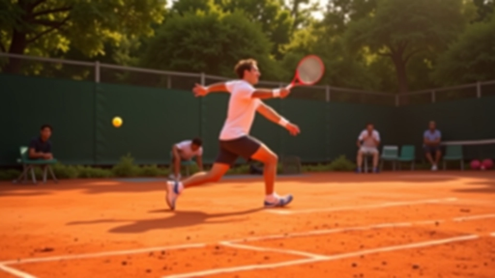
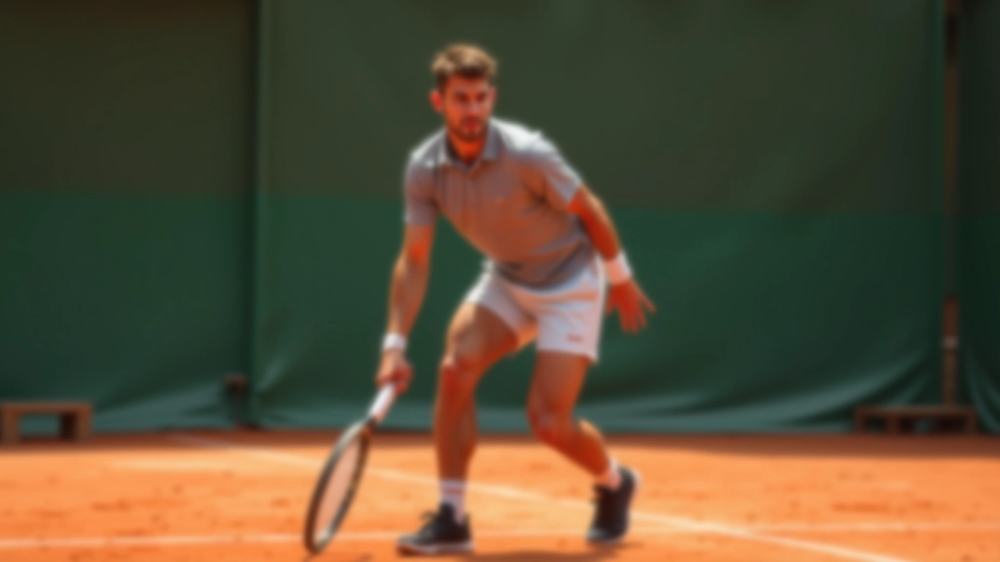
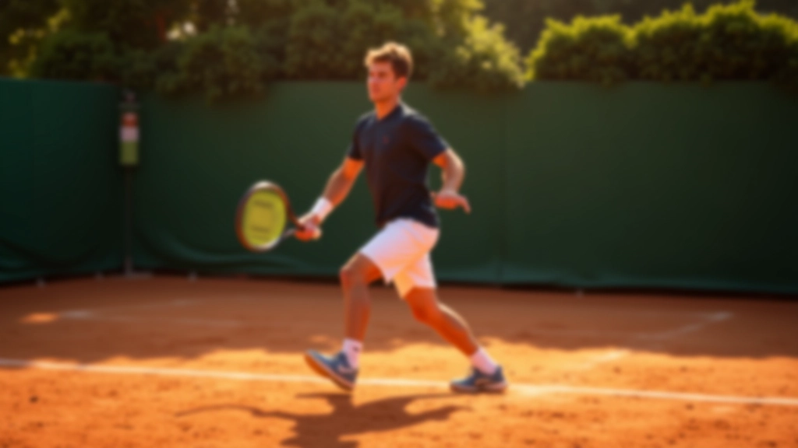
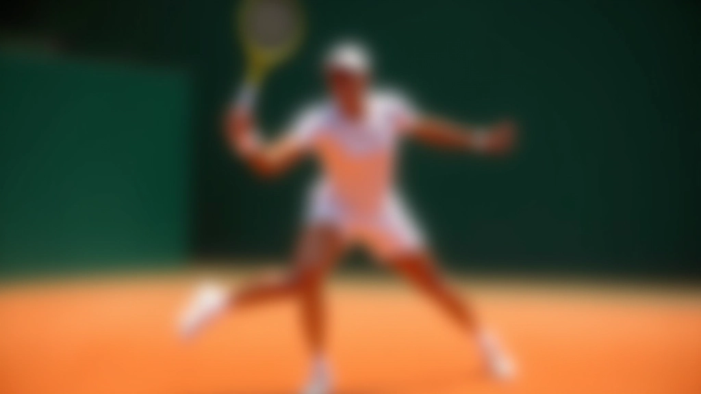
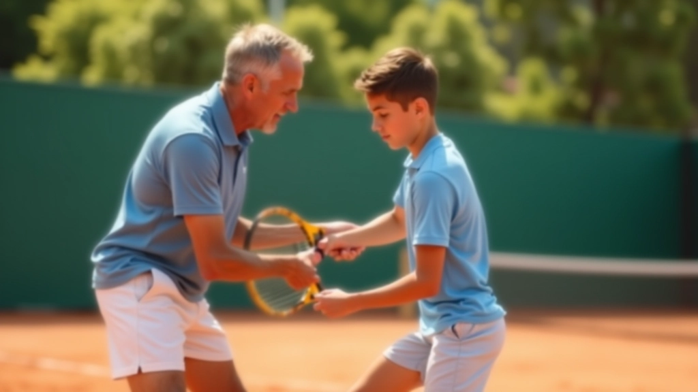

خطوات الانزلاق الصحيحة: من البداية للاحتراف
الانزلاق على الملاعب الترابية ليس مجرد حركة عشوائية. إنها فن وعلم مجتمعان معاً. تعلم كيف تنزلق بثقة وآمان من الخطوات الأساسية وحتى الاحتراف.

لماذا الانزلاق مهم؟
عندما تلعب على الطين، الانزلاق ليس خيار — إنه ضرورة. اللاعبون الذين يتقنون هذه التقنية يستطيعون الوصول إلى الكرات البعيدة، يحافظون على توازنهم، وينفذون ضربات قوية حتى في أصعب المواقف.
المشكلة أن معظم المبتدئين يتعلمون الانزلاق بطريقة خاطئة. نتيجة ذلك؟ إصابات غير ضرورية، فقدان السيطرة، وإحباط كبير. لكن الخبر السار هو أن الطريقة الصحيحة يمكن تعلمها — وسنعلمك إياها.
تحضير الموقف
قبل أن تنزلق، عليك أن تكون جاهزاً. قف بثبات مع أقدام بعرض أكتافك. عندما ترى أن الكرة بعيدة، ابدأ بخطوات جانبية سريعة. لا تركض بشكل مستقيم — تحرك بزاوية نحو الكرة. هذا التحضير هو الفرق بين انزلاق متحكم فيه وسقوط مفاجئ.


نقطة الدخول
هذه لحظة حرجة. عندما تقترب من الكرة، ضع قدمك الأمامية على الأرض بقوة. هذا يبطئ حركتك ويعطيك السيطرة. كثير من الناس يخطئون هنا — يحاولون الانزلاق من البداية بدلاً من الدخول تدريجياً. النتيجة؟ تنزلق بسرعة كبيرة وتفقد التوازن. تذكر: الانزلاق ليس عن السرعة، بل عن التحكم.
الانزلاق الفعلي
الآن يحدث السحر. مع إبقاء قدمك الأمامية ثابتة، أسقط وزنك على القدم الخلفية. ستنزلق بشكل طبيعي على السطح. الطين يساعدك هنا — إنه مصمم للانزلاق. اترك ساقك الخلفية تمتد بشكل مسترخي. حافظ على رؤيتك نحو الكرة — لا تنظر إلى الأرض. جسدك يعرف ما يفعله.

أخطاء شائعة وكيفية تجنبها
الخطأ الأول: الانزلاق المبكر جداً
بعض اللاعبين يبدأون الانزلاق قبل الأوان. ينتهي بهم الحال وهم ينزلقون في اتجاه خاطئ أو يفقدون توازنهم تماماً. الحل؟ انتظر قليلاً. تأكد من أنك في الموضع الصحيح أولاً.
الخطأ الثاني: جسد متيبس
إذا كنت متيبساً، ستشعر بألم وقد تسقط بصعوبة. استرخ قليلاً. اترك ركبتيك تنحنيان بشكل طبيعي. استنشق بعمق قبل الانزلاق — هذا يساعدك على الاسترخاء.
الخطأ الثالث: عدم تقوية الأساس
الانزلاق يحتاج قوة في الساقين والبطن. إذا كنت ضعيفاً هنا، ستفقد السيطرة بسرعة. قضِ 15 دقيقة يومياً على تمارين القوة — اسكوات، طعنات جانبية، تمارين البطن.
برنامج التدريب
لا تتوقع أن تتقن الانزلاق في يوم واحد. حتى المحترفون استغرقوا وقتاً. لكن مع التدريب المنتظم، ستشعر بفرق واضح في ثلاثة أسابيع.
الأسبوع الأول
ركز على الخطوات الثلاث الأولى بدون كرة. مارسها 10-15 مرات في كل جلسة. اشعر بالحركة، فهم الآلية.
الأسبوع الثاني
أضف الكرة الآن. اطلب من شخص أن يرمي الكرات إليك. ركز على الانزلاق الصحيح، ليس على ضرب الكرة بقوة.
الأسبوع الثالث
ابدأ في تطبيق الانزلاق أثناء اللعب الفعلي. لا تقلق إذا لم تكن مثالياً — الممارسة هي المعلم الحقيقي.

الخلاصة
الانزلاق على الملاعب الترابية ليس مستحيلاً. إنه مهارة يمكن تعلمها مع الصبر والممارسة. ابدأ بالأساسيات، تجنب الأخطاء الشائعة، وكن صبوراً مع نفسك. في غضون أسابيع قليلة، ستلاحظ أنك تتحرك على الطين بثقة أكبر.
تذكر: أفضل لاعب هو الذي يستمر في التعلم والتحسن. كل مرة تنزلق فيها، تكتسب خبرة. لا تيأس من الأخطاء — استفد منها. قريباً جداً، ستشعر بأن الانزلاق أمر طبيعي تماماً، تماماً كالمشي.
تنبيه مهم
المعلومات في هذا الدليل مقدمة لأغراض تعليمية فقط. التدريب البدني يحمل مخاطر طبيعية. إذا كنت تعاني من أي حالة صحية أو إصابة سابقة، استشر طبيباً أو مدرباً مؤهلاً قبل البدء بأي برنامج تدريبي جديد. تدرب بحذر، استمع إلى جسدك، وتوقف فوراً إذا شعرت بألم حاد.